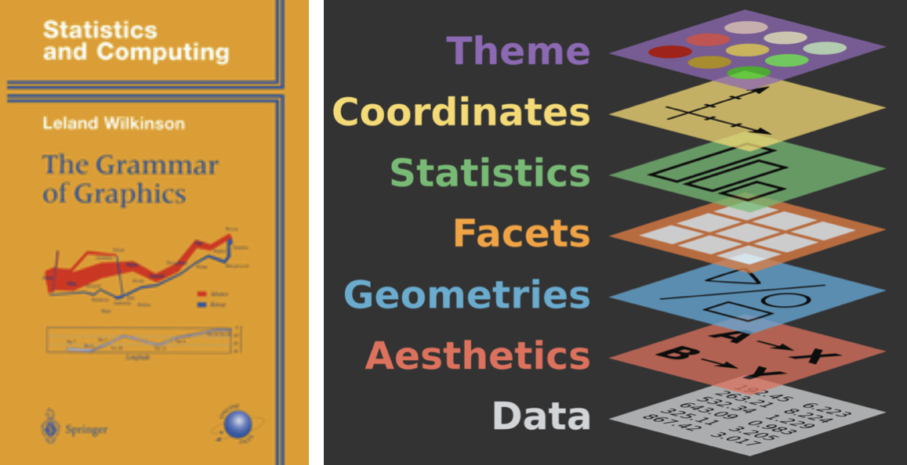

Data Visualization in R
Week 8, Part 1
Jeff Jacobs
jj1088@georgetown.edu
DSAN Summer Bootcamp 2024
Georgetown University
Why Are We Starting with Tidyverse Here?
Base R vs. Tidyverse
Code
library(tidyverse)
us_mean <- 78.69
lexp_df <- read_csv("assets/lexp_by_ward.csv")
lexp_df <- lexp_df |> mutate(
above_avg = ifelse(life_exp > us_mean, "Above Mean", "Below Mean")
)
lexp_df |> ggplot(aes(x=as.factor(ward), y=life_exp, color=above_avg)) +
geom_point(size=5) +
geom_segment(
aes(xend=ward, yend=us_mean),
linewidth=1.5
) +
geom_hline(
aes(
yintercept=us_mean,
linetype="National Mean"
),
linewidth=1
) +
dsan_theme("half") +
theme(
plot.title = element_text(hjust = 0.5)
) +
labs(
x = "Ward",
y = "Life Expectancy",
title = "DC Life Expectancy by Ward (2015)"
) +
scale_linetype_manual("test", values=c("dashed")) +
remove_legend_title()Plus Way Wider Range of Plot Types!
(All using the same syntax)
Code
library(sf)
my_sf <- read_sf("assets/Wards_from_2022.geojson")
my_sf_merged <- my_sf |> left_join(
lexp_df, by=c("WARD"="ward")
)
my_sf_merged |> ggplot(aes(fill=life_exp)) +
geom_sf() +
dsan_theme() +
theme(
axis.line = element_blank(),
axis.text = element_blank(),
axis.ticks = element_blank()
) +
labs(
title = "DC Life Expectancy by Ward (2015)",
fill = "Life Exp."
) +
scale_fill_viridis_c()Figure 1: Life expectancy by ward; Shapefile from OpenData.DC.gov
Why Do Data Scientists Have To Know Visualization?
…Can’t We Just Use Fancy Statistical Methods?
- …Enter Anscombe’s Quartet
Code
library(tidyverse)
library(datasets)
anscombe_df <- datasets::anscombe |>
#mutate(id = row_number()) |>
pivot_longer(
everything(),
cols_vary = "slowest",
names_to = c(".value", "Dataset"),
names_pattern = "(.)(.)"
)
anscombe_plot_base <- anscombe_df |>
ggplot(aes(x=x, y=y, color=Dataset)) +
geom_point(size=g_pointsize / 2) +
geom_smooth(method="lm", se=FALSE, fullrange=TRUE) +
dsan_theme("full") +
xlim(c(4, 20)) + ylim(c(2, 14))
anscombe_plot_base +
facet_wrap(vars(Dataset), nrow=2, scales="free")The Scariest Dataset of All Time

It Gets Worse…
Grammar of Graphics
Intuition
- Sentences are made up of subjects, verbs, objects
- Visualizations are made up of encodings, coordinate systems, aesthetic mappings
Graphical Primitives
Split the visualization task into discrete steps, joined by |>!
| Layer | Function | Explanation |
|---|---|---|
| Data | ggplot(df) |
Raw data you want to visualize |
| Aesthetics | aes(x=xcol,y=ycol) |
Mapping of df columns onto geometries |
| Geometries | geom_*() |
Which geometric objects to use |
| Facets | facet_*() |
Arrangement of plots into a grid |
| Theme | theme(), labs() |
Overall visual defaults, titles, axis labels |
(See the official ggplot2 book for more!)
ggplot2 In Practice
(In practice, a few central graphical primitives you’ll use over and over again)
Common Geometries
geom_point() for scatterplots
Combining Geometries
…Which can be used together in a single plot:
Titles + Axis Labels
Can all be accomplished using the labs() function!
Categorical Variables
Use the color aesthetic with factor() to differentiate categories
(Clustered data generation code)
set.seed(2024)
centroids <- list(c(0,0),c(0,1),c(1,0),c(1,1))
cluster_df <- tibble()
N <- 50
Sigma <- matrix(c(0.05, 0, 0, 0.05), nrow=2, ncol=2, byrow=TRUE)
for (i in 1:length(centroids)) {
cur_centroid <- centroids[[i]]
# Generate N points from this centroid
cur_data <- MASS::mvrnorm(N, cur_centroid, Sigma)
colnames(cur_data) <- c("x", "y")
cur_df <- as_tibble(cur_data)
cur_df <- cur_df |> mutate(
cluster = i
)
cluster_df <- rbind(cluster_df, cur_df)
}Without factor()
Facets
If individual plot gets too busy, facets provide an easy way to split data into multiple (automatically-labeled) plots!
(Much more on this in DSAN 5200: Advanced Data Visualization 😉)
Visualizing Text Data
Loading Text Data
library(tidyverse)
library(tidytext)
text_url <- "https://gist.githubusercontent.com/jpowerj/493e395c2688ea72eabd0277e8e7a392/raw/6f882d95f3a1dc21c3b7e0b18b68d64b165c6367/eggs.txt"
result_df <- as_tibble(read_lines(text_url))
result_df <- result_df |> filter(value != "")
result_df |> head(5)| value |
|---|
| I am Sam |
| Sam I am |
| That Sam-I-am! |
| That Sam-I-am! |
| I do not like that Sam-I-am! |
Tokenization
Removing Stopwords
Computing Token Counts
Basic Wordcloud
With Color!
The Size Aesthetic
2024 DSAN Bootcamp W08-1: Visualization